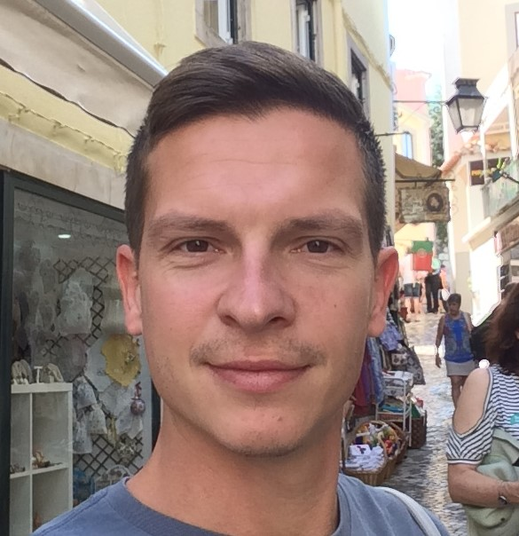

Srđan Šolajić
Front end developer
Pančevo, Srbija
info
Zdravo, ja sam Srđan! Već duži vremenski period razmišljam da se prekvalifikujem ka IT sektoru jer sebe vidim u tim vodama. Nakon dosta prepreka sa vremenom uspeo sam da u poslenjih godinu dana organizujem svoje vreme pored posla sa punim radnim vremenom da završim par kurseva. Moja energija i želja za znanjem i napredovanjem me podstiču u istraživanju novih izazova.